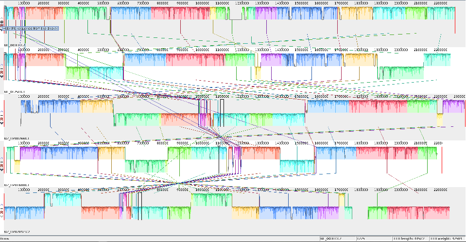
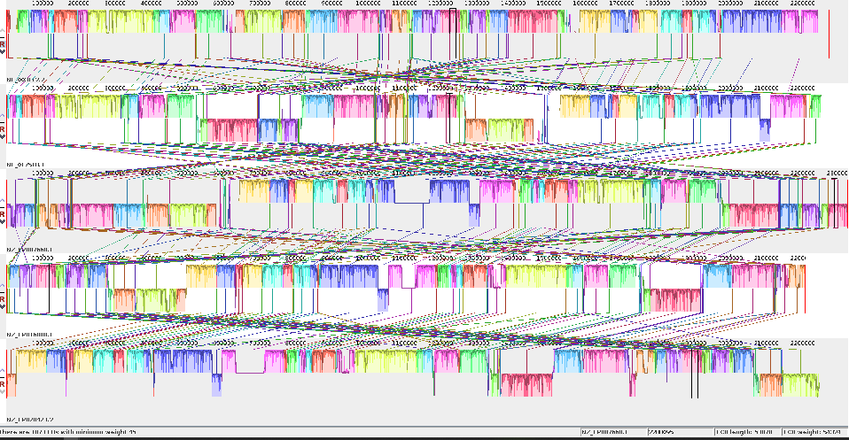
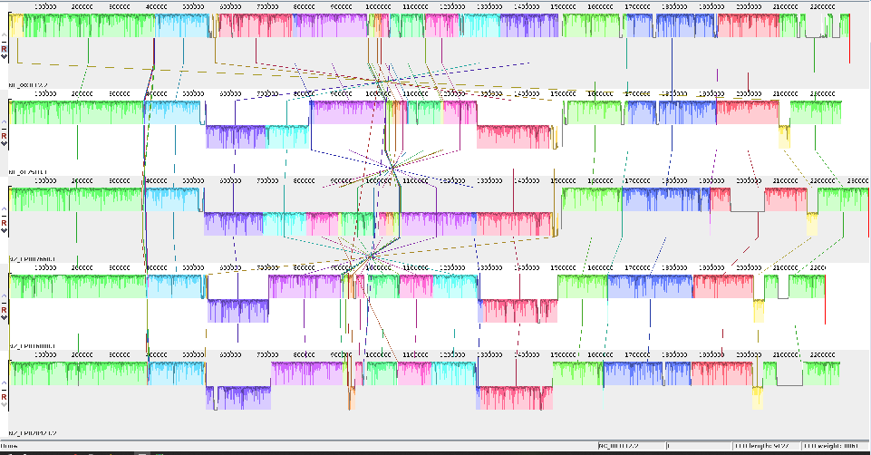

2. Tools & setup¶
Tools used for the pangenome graph pipeline
- The PanGenome Graph Builder (PGGB) is used for graph construction (https://github.com/pangenome/pggb).
- The Optimized Dynamic Genome/Graph Implementation (ODGI) is employed for graph manipulation (https://github.com/pangenome/odgi).
- The VG Toolkit is utilized for variant calling with NGS against a pangenome graph reference (https://github.com/vgteam/vg).
- Mash is used to estimate pairwise distances among genomes (https://github.com/marbl/Mash).
- ProgressiveMauve is utilized to verify the alignment of genomes (https://darlinglab.org/mauve/user-guide/progressivemauve.html)
- Circlator is employed to fix the starting point of genomes (https://sanger-pathogens.github.io/circlator/).
- SAMtools is used to build an index of input FASTA files (https://github.com/samtools/samtools).
- BCFtools is used to check the statistics of VCF files (https://github.com/samtools/bcftools).
Other Tools might be useful for pangenome graphs
- The Minigraph-Cactus Pangenome Pipeline (https://github.com/ComparativeGenomicsToolkit/cactus/blob/master/doc/pangenome.md).
- gfaestus, which can be used for graph visualization (https://github.com/chfi/gfaestus)
- SequenceTubeMap for tube map visualization of genomic sequence graphs (https://github.com/vgteam/sequenceTubeMap)
- ......
Software stack for pggb pipeline
All of the required software is pre-installed and configured as modules. We will load them as needed
- pggb/0.5.3-Miniconda3
- SAMtools
- Mash/2.3-GCC-11.3.0
- Circlator/1.5.5-gimkl-2022a-Python-3.10.5
- vg/1.46.0
Running the pggb workflow locally
The following code DOES NOT need to be run if you working on NeSI, but is provided here to show how to work through the workshop material on a non-NeSI system (e.g., if you are running the code on your own computer).
Obtaining pggb¶
From https://github.com/pangenome/pggb, you can find the details about installing pggb with Docker, Singularity, bioconda, guix, or by manually building its dependencies.
Using pggb via Singularity¶
Many managed HPCs utilize Singularity as a secure alternative to docker. Fortunately, docker images can be run through Singularity seamlessly. First pull the docker file and create a Singularity SIF image from the dockerfile. This might take a few minutes.
Next clone the pggb repo and cd into it Finally, run pggb from the Singularity image. For Singularity to be able to read and write files to a directory on the host operating system, we need to 'bind' that directory using the -B option and pass the pggb command as an argument.Neisseria meningitidis data set¶
In this workshop, we use the bacterium Neisseria (N.) meningitidis as our model organism.
- Bacteria called N. meningitidis cause meningococcal disease(IMD). About 1 in 10 people have these bacteria in the back of their nose and throat without being ill. This is called being ‘a carrier.’ Sometimes the bacteria invade the body and cause IMD.
- Different capsular polysaccharides divide the meningococci into at least 12 serogroups, of which six groups (A, B, C, W, X, and Y) are responsible for most disease.
- The genome of this bacterium spans approximately 2.1 to 2.4 Mb and possesses a GC content ranging from 51-52%.
- A notable trait of N. meningitidis genomes is their high recombination rate, which contributes significantly to the substantial genetic diversity found in this species.
- Throughout this workshop, we use five genome assemblies of N. meningitidis to evaluate the pangenome pipeline, from the construction of the pangenome graph to the calling of variants.
| genomes | ASM IDs | GCF IDs | SEROGROUP | Sequence type | Clonal Complex |
|---|---|---|---|---|---|
| NC_017518.1 Neisseria meningitidis NZ-05/33 | ASM19152v1 | GCF_000191525.1 | B | 42 | ST-41/44 |
| NC_003112.2 Neisseria meningitidis MC58 | ASM880v1 | GCF_000008805.1 | - | 74 | ST-32 |
| NZ_CP007668.1 Neisseria meningitidis M0579 | ASM102983v1 | GCF_001029835.1 | B | - | ST-41/44 |
| NZ_CP016880.1 Neisseria meningitidis strain M07165 | ASM170367v1 | GCF_001703675.1 | W | 11 | ST-11 |
| NZ_CP020423.2 Neisseria meningitidis strain FDAARGOS_212 | ASM207367v2 | GCF_002073675.2 | C | - | ST16521 |
How the Neisseria meningitidis genomes were formatted for this workshop
The following code DOES NOT need to be run, but is provided here to show how the Neisseria meningitidis genomes were downloaded and prepared for analysis.
# Create a new directory called nm_genomes and change to that directory
mkdir nm_genomes
cd nm_genomes
Download the genome assemblies from NCBI and uncompress. In the Unix environment you can use the curl command.
#NC_017518.1
curl -OJX GET "https://api.ncbi.nlm.nih.gov/datasets/v2alpha/genome/accession/GCF_000191525.1/download?include_annotation_type=GENOME_FASTA,GENOME_GFF,RNA_FASTA,CDS_FASTA,PROT_FASTA,SEQUENCE_REPORT&filename=GCF_000191525.1.zip" -H "Accept: application/zip"
# ACC NUM?
curl -OJX GET "https://api.ncbi.nlm.nih.gov/datasets/v2alpha/genome/accession/GCF_001029835.1/download?include_annotation_type=GENOME_FASTA,GENOME_GFF,RNA_FASTA,CDS_FASTA,PROT_FASTA,SEQUENCE_REPORT&filename=GCF_001029835.1.zip" -H "Accept: application/zip"
# ACC NUM?
curl -OJX GET "https://api.ncbi.nlm.nih.gov/datasets/v2alpha/genome/accession/GCF_001703675.1/download?include_annotation_type=GENOME_FASTA,GENOME_GFF,RNA_FASTA,CDS_FASTA,PROT_FASTA,SEQUENCE_REPORT&filename=GCF_001703675.1.zip" -H "Accept: application/zip"
# ACC NUM?
curl -OJX GET "https://api.ncbi.nlm.nih.gov/datasets/v2alpha/genome/accession/GCF_002073675.2/download?include_annotation_type=GENOME_FASTA,GENOME_GFF,RNA_FASTA,CDS_FASTA,PROT_FASTA,SEQUENCE_REPORT&filename=GCF_002073675.2.zip" -H "Accept: application/zip"
# ACC NUM?
curl -OJX GET "https://api.ncbi.nlm.nih.gov/datasets/v2alpha/genome/accession/GCF_000008805.1/download?include_annotation_type=GENOME_FASTA,GENOME_GFF,RNA_FASTA,CDS_FASTA,PROT_FASTA,SEQUENCE_REPORT&filename=GCF_000008805.1.zip" -H "Accept: application/zip"
On NeSI, a slurm job can be run to process the .fna genomes. The contents of the slurm job file (unzip_genomes.sl)
are as follows:
The slurm job can be run via:
Remove unneeded files:
Use the cat command to combine genomes into a single fasta file:
Fix the start point of the input genomes?
Circlator¶
Bacterial genomes are typically circular, so establishing a fixed starting point for each input genome during pangenome graph construction could reduce unnecessary complexity within the graph. Once the genomes are aligned with the same starting point, we can build their index using samtools faidx and proceed with constructing the pangenome graph. I encourage you to experiment with this approach after this workshop to see how effectively it functions. Please note that it may be necessary to try different regions as a starting point to ensure that all genomes are fixed with the same initial region.
let's fix the start for all genome using circlator, submit a slurm job. It takes less than one minute for each sample.
Use the cat command to combine genomes into a single fasta file:
Fix the start point of the 5NM genomes
One tricky aspect is finding a region that is present in all the genomes and is oriented in the same direction The mauve alignment of the 5NM genomes 
{kind=link}
The Mauve alignment after attempting to fix the start point using the first 50 lines of genome one. 
{kind=link}
The Mauve alignment after fixing the start point using the first 50 lines of the second genome, which has been aligned with the first 50 lines of genome one. 
{kind=link}
Setting up your project directory and downloading the dataset¶
code
- Create a new directory under your home folder and change to that directory.
~/pg_workshopwill be your working directory- Keep a note of the absolute path of your working directory
-
Please download the dataset.
-
Copy the 5NM.fa and dataset to your working directory (To keep the filenames simple, we have renamed the 5NMfs.fa to 5NM.fa for this workshop)